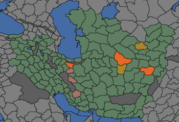

{kind=link}
| 近东 |
| 波斯及中亚 |
| 北亚 |
| 东亚 |
| 东南亚 |
| 印度 |
| 帖木儿 | |
| 政府等级 | |
| 主流文化 | |
| 首都 | |
| 政体 | 伊克塔 |
| 国教 | |
| 学派 | |
| 科技组 | |
| 帖木儿的理念 |
此信息可能已落后版本，最后更新于1.35 ----
|
| +1 外交关系 +1 陆军将领冲击 |
| +5% 训练度
|
|
|

帖木儿（英文：Timurids）是一个  逊尼派伊克塔政体的帝国，尊奉的是伊斯兰教的
逊尼派伊克塔政体的帝国，尊奉的是伊斯兰教的  哈乃斐学派。帖木儿帝国的地理位置决定了它很轻易地便可通过阿富汗进入印度，在征服
哈乃斐学派。帖木儿帝国的地理位置决定了它很轻易地便可通过阿富汗进入印度，在征服  德里和
德里和  章普尔的开局领土后就能成立
章普尔的开局领土后就能成立  莫卧儿了。
莫卧儿了。
但坏处也显而易见，帖木儿的主流文化是属于阿尔泰文化组的乌兹别克文化，而它治下的大部分省份都属于伊朗文化组，所以叛军就可以说是家常便饭了。但一旦帖木儿熬过这段时间，成功整合在伊朗地区的附庸的话，那么配合强大的穆斯林兵种组一定会在世界舞台上占有一席之地。
游戏开始时，帖木儿有许多附庸： 河中、
河中、 锡斯坦、
锡斯坦、 阿富汗、
阿富汗、 法尔斯和
法尔斯和  呼罗珊。当沙哈鲁去世后，由于失去了修正，所有附庸国都会额外增加55%独立倾向，所以很难维持对它们的控制。
呼罗珊。当沙哈鲁去世后，由于失去了修正，所有附庸国都会额外增加55%独立倾向，所以很难维持对它们的控制。
在游戏开局的时间，尽管跛子帖木儿早已入土，他当年建立的这个跨越欧亚大陆的强大帝国还控制着波斯腹地。帝国经历了数次政治斗争后，在帖木儿第四子沙哈鲁的治下维持了数十年的繁荣和稳定。但时至1444年，沙哈鲁已经陷入重病。历史上，沙哈鲁于1447年死后，帝国立即陷入了分裂和动乱，西部的波斯和伊拉克最终被悉数侵吞，而东部则分为  河中和
河中和  呼罗珊两大块。1459年后帝国在阿布·赛义德（或译卜撒因）手中短暂地重归统一，但在1469年他死于
呼罗珊两大块。1459年后帝国在阿布·赛义德（或译卜撒因）手中短暂地重归统一，但在1469年他死于  白羊的雄主乌尊·哈桑之手之后，帝国陷入了更严重的分裂。帝国最终于16世纪初彻底灭亡；但卜撒因的孙子——巴布尔作为帖木儿的传人，尽管未能击败乌兹别克人、在中亚重建帝国，却最终在印度北部立足，成为了
白羊的雄主乌尊·哈桑之手之后，帝国陷入了更严重的分裂。帝国最终于16世纪初彻底灭亡；但卜撒因的孙子——巴布尔作为帖木儿的传人，尽管未能击败乌兹别克人、在中亚重建帝国，却最终在印度北部立足，成为了  莫卧儿帝国的开国君主。
莫卧儿帝国的开国君主。
另参见：帖木儿诸国任务、帖木儿任务/基础游戏
帖木儿的基础任务主要引导它对帝国的各处领土重新建立直接控制，以及将势力扩展到印度北部。DLC 达摩只对帖木儿的任务作出了极其有限的拓展。
而在DLC
达摩只对帖木儿的任务作出了极其有限的拓展。
而在DLC 变革之风中，帖木儿获得了更新的豪华任务树，分为游牧路线和波斯路线。
变革之风中，帖木儿获得了更新的豪华任务树，分为游牧路线和波斯路线。
帖木儿的事件主要关注于君主死后出现的动乱。帖木儿的开局君主，沙哈鲁有自己专属的君主特质，效果是附属独立倾向  -50%。当他死后，强大的帖木儿附属国，代表着帖木儿王朝的王子和总督们，很有可能为了瓜分帖木儿帝国而叛变。
-50%。当他死后，强大的帖木儿附属国，代表着帖木儿王朝的王子和总督们，很有可能为了瓜分帖木儿帝国而叛变。
|
|
这条信息可能已不适合当前版本，最后更新于1.35。 |
她的原名是阿姬曼·芭奴，但她的丈夫，库拉姆王子，未来的皇帝沙·贾汗在为她的美貌和性格所倾倒之后，赐予了她穆姆塔兹·马哈尔的称号，意为「宫中获选者」。他们之间的爱情，亲密与激情是那么的强，以至于沙·贾汗忽视了他的另外两个妻子，仅仅像是例行公事般与她们各生了一个孩子。诗人歌颂着她的美丽，优雅与怜悯之心，而宫廷历史学家们记下来他们之间充满亲密与情欲的关系。穆塔兹·马哈尔从未离开沙·贾汗的身边，与他一同在$COUNTRY$的各地游历。沙·贾汗十分信任她，以至于将他的皇家印章也赠与了她。虽然她没有任何的政治野心，但她仍然常常代表着穷苦的底层人民向她的丈夫提出建议。十三次身孕渐渐地摧残着她的身体，最终她没有能撑过第十四次。沙·贾汗因她的死而悲痛欲绝地悼念了整整一年，当他回来时，连头发都变得花白。他的脊背已经弯曲，面颊也饱经沧桑，只有他的长女贾哈那拉能够让他走出伤痛。他亲自为亡妻设计了泰姬陵，把它作为穆塔兹·马哈尔的陵墓。
| 触发条件 | 平均发生时间
200 月 |
立即生效
| |
选择条件
这片大地沉浸于伤痛之中，我们永远也不会忘记穆姆塔兹·马哈尔。
确保泰姬陵能够完工。
| |
|
|
这条信息可能已不适合当前版本，最后更新于1.36。 |
埃米尔帖木儿曾经击溃了这片区域的所有王国，并把他们的统治权交给他的亲属。自从帖木儿去世之后，整个帝国一直在分裂，许多的王子都拥有帖木儿帝国的宣称。一些地方的统治者已经邀请帖木儿的宣称者来到他们的国家，拥立其作为领袖，并利用帖木儿的名字把疆域扩大到他曾经统治的所有领土。
| 潜在需求 | 接受
|
效果
| |
AI决议因子：
|
|
这条信息可能已不适合当前版本，最后更新于1.36。 |
作为伟大的征服者帖木儿的后裔，我们有义务收回他在伊朗、河中地区和呼罗珊的遗产。现在，我们控制了曾经帝国的各个部分，是时候宣布自己是帖木儿王朝的首领了。
| 潜在需求 | 接受 |
效果
| |
AI决议因子：

帖木儿在整合背叛的附庸后，处在一个成立  莫卧儿的极佳位置上。这需要
莫卧儿的极佳位置上。这需要  德里的大部分领土。但没有任何
德里的大部分领土。但没有任何  稳定度或理念组要求（成立也不会掉稳定），也不需要花费任何
稳定度或理念组要求（成立也不会掉稳定），也不需要花费任何  行政点数，成立的国家也会自动得到比穆斯林兵种组早获得火力点的印度兵种组，还会获得整个印度斯坦区域的永久宣称 ，拿到更好的国家理念和相关事件。
行政点数，成立的国家也会自动得到比穆斯林兵种组早获得火力点的印度兵种组，还会获得整个印度斯坦区域的永久宣称 ，拿到更好的国家理念和相关事件。
|
|
这条信息可能已不适合当前版本，最后更新于1.35。 |
$MONARCH$已经为他的新帝国奠定了坚实的基础。虽然人数不多，但他纪律严明的军队在对抗印度苏丹的战役中打了不少的胜仗。特别是$CAPITAL$之战成为了这一系列扩展疆土的战役中的第一个胜仗。在不久的将来，莫卧儿帝国将横扫整个印度半岛。
潜在需求
|
接受
|
效果
| |
AI决议权重：
财富、名声、权力，曾经拥有世上这一切的男人，帖木儿帝国的埃米尔“瘸子”帖木儿，弥留之际的话使无数人趋之若鹜奔向亚洲：‘想要我的帝国吗？想要的话就来拿吧！我聚敛的一切都放在那儿了！只要你能不让它四分五裂！’在这些话的激励下，无数英雄豪杰作为帖木儿的主宰者，踏上了连他们自己都未曾设想的伟大征程。这，就是波澜壮阔的‘变革之风’时代！ ——译自开发者日志下评论
帖木儿帝国开局时地理位置比较尴尬，既有好处也有坏处。坏处是它控制着一大片异教和异文化的领土。不过在文明的摇篮DLC后，大量的领土被分给了帖木儿的附庸和独立的  阿贾姆手上，虽然叛乱的问题减少了，但另一个问题就出现了，宗主国帖木儿的力量比这些附庸弱的情况导致了这些附庸的独立倾向非常高，对于你而言，这毋庸置疑是一个鬼门关。
阿贾姆手上，虽然叛乱的问题减少了，但另一个问题就出现了，宗主国帖木儿的力量比这些附庸弱的情况导致了这些附庸的独立倾向非常高，对于你而言，这毋庸置疑是一个鬼门关。 河中作为附庸中最强大的一个一定会寻找外国支持以争取独立。
河中作为附庸中最强大的一个一定会寻找外国支持以争取独立。 变革之风发布后，你处理这一切有了一个新方法——稍后你就会明白为什么会用这两个短语作为标题。
变革之风发布后，你处理这一切有了一个新方法——稍后你就会明白为什么会用这两个短语作为标题。
开局后差不多6个月内就会出现事件“伊斯法罕的行动”，在这里一定要选择与 阿贾姆开战。在此之前,你要尽量拉拢
阿贾姆开战。在此之前,你要尽量拉拢 黑羊（可以试试宿敌
黑羊（可以试试宿敌 马穆鲁克），在开战后通过许诺土地来让黑羊参战，这样可以使其吸引
马穆鲁克），在开战后通过许诺土地来让黑羊参战，这样可以使其吸引 白羊——可能还有
白羊——可能还有 希尔凡——的火力，但打赢后不要真的给地，而要尽可能割走阿贾姆的地，如果黑羊占领了一部分，就将那部分留着当附庸，不然也不能全割走，还得留一块当附庸（方便操作起见，别让它的盟友也变成附庸），这样，完成“镇压叛徒”任务就会给予你附庸独立倾向-20%的奖励，这不需要放弃任何一个附庸国，当前版本下单纯依靠政体以及任务树的减独立倾向修正30年的持续时间已经足以让你慢慢解决附庸问题了。这操作有些难度，但总不至于与没有DLC时还全都要相仿，沙哈鲁死后，附庸很可能变得不忠而摸鱼，但在战争期间附庸无法找人支持独立，这时
希尔凡——的火力，但打赢后不要真的给地，而要尽可能割走阿贾姆的地，如果黑羊占领了一部分，就将那部分留着当附庸，不然也不能全割走，还得留一块当附庸（方便操作起见，别让它的盟友也变成附庸），这样，完成“镇压叛徒”任务就会给予你附庸独立倾向-20%的奖励，这不需要放弃任何一个附庸国，当前版本下单纯依靠政体以及任务树的减独立倾向修正30年的持续时间已经足以让你慢慢解决附庸问题了。这操作有些难度，但总不至于与没有DLC时还全都要相仿，沙哈鲁死后，附庸很可能变得不忠而摸鱼，但在战争期间附庸无法找人支持独立，这时 黑羊的帮助就至关重要。
黑羊的帮助就至关重要。
顺带说一句，吞附庸时不能一口气吞4个，应该先吞2个（其中最好包括 河中），这样可以使你以最快速度吞掉剩余的附庸，尽快变成完全体，而不用再等上十几二十年。
河中），这样可以使你以最快速度吞掉剩余的附庸，尽快变成完全体，而不用再等上十几二十年。
帖木儿开局是以乌兹别克为主流文化，而帝国等级使帖木儿可以接受阿尔泰文化组的所有文化，但这并没有什么太大的用处，因为帖木儿的大部分领土都是伊朗文化组，而大部分阿尔泰文化国家开局基本都属于  大明的朝贡国，帖木儿开局四分五裂的状态并不是挑战
大明的朝贡国，帖木儿开局四分五裂的状态并不是挑战  大明的好时机。所以下面有两条比较好的路线以供选择：
大明的好时机。所以下面有两条比较好的路线以供选择：
这是一条帖木儿的传统扩张路线，在吞并部分北印度几块关键省份后，就能成立  莫卧儿了。成立莫卧儿之后获得的印度苏丹国政体自带的 +3异教容忍，大大缓解了异教问题，而特有政体底万的文化同化机制，更是彻底解决了异文化问题，版本之子莫过于此。再加上
莫卧儿了。成立莫卧儿之后获得的印度苏丹国政体自带的 +3异教容忍，大大缓解了异教问题，而特有政体底万的文化同化机制，更是彻底解决了异文化问题，版本之子莫过于此。再加上  永久宣称 -25% 和莫卧儿的传统
永久宣称 -25% 和莫卧儿的传统  造核花费 -25%，配合独有的征服印度的任务树，统一印度可以说是顺手拈来。在这个过程中，唯一需要注意的只有怎么西征来迁都欧洲以成立贸易公司从而方便统治广大的印度贸易公司地区。
造核花费 -25%，配合独有的征服印度的任务树，统一印度可以说是顺手拈来。在这个过程中，唯一需要注意的只有怎么西征来迁都欧洲以成立贸易公司从而方便统治广大的印度贸易公司地区。
玩家也可以通过吞并呼罗珊或法尔斯，再吃掉其它一些省份或提升伊朗文化的发展度后伊朗化.如果启用 变革之风，则可通过完成任务来直接转变主流文化为波斯。在文化转变为伊朗后，帝国级别的帖木儿就转而成了伊朗文化组的文化联盟，而帖木儿及其附庸控制下的地盘90%以上都是伊朗文化组。之后在宗教理念组的帮助下把治下
变革之风，则可通过完成任务来直接转变主流文化为波斯。在文化转变为伊朗后，帝国级别的帖木儿就转而成了伊朗文化组的文化联盟，而帖木儿及其附庸控制下的地盘90%以上都是伊朗文化组。之后在宗教理念组的帮助下把治下 什叶遍地的省份传为
什叶遍地的省份传为 逊尼省份。
逊尼省份。 变革之风发布后，帖木儿也可以成立
变革之风发布后，帖木儿也可以成立  波斯，但这基本没什么必要性可言，因为帖木儿的理念等方面的优势与
波斯，但这基本没什么必要性可言，因为帖木儿的理念等方面的优势与  波斯的奖励基本不相上下。
波斯的奖励基本不相上下。
另一种思路，为何不能把自己的宗教转为波斯地区盛行的 什叶派。转教之后你就不用为了叛军遍地走的问题讹过分操心。作为孤儿宗教，配合你强大的国力与宗教理念组，你能获得对大量国家的宣战理由并轻松征服他们。
什叶派。转教之后你就不用为了叛军遍地走的问题讹过分操心。作为孤儿宗教，配合你强大的国力与宗教理念组，你能获得对大量国家的宣战理由并轻松征服他们。
不管怎么说，帖木儿都应该吞并那些附庸，然后再决定今后的扩张路线。一个方法是继续和奥斯曼结盟，然后东进征服印度。或西进，在奥斯曼之前征服  白羊，
白羊， 杜勒卡迪尔等安纳托利亚小国以堵住奥斯曼的扩张路线。也可以北上，在吞并河中后，与
杜勒卡迪尔等安纳托利亚小国以堵住奥斯曼的扩张路线。也可以北上，在吞并河中后，与  莫斯科/
莫斯科/ 俄罗斯作战。
俄罗斯作战。
思潮的传播对于帖木儿也是个大问题，大部分思潮的起源地往往都在欧洲，处在中亚的帖木儿与之距离过于遥远，等待思潮自己传播过来需要很长的时间。最好存一些点数以在思潮出现后以最快的速度种出来。
你开局时拥有的附属国 河中控制着数个地形为旱地的省份，里海沿岸同样有数个旱地省份，连年混战的北印度有大片地形为农田的省份。与波斯那些山地省份相比，这些地区发展成本低，且产物价值高，可优先考虑占领这些地区后提升发展度以获得思潮。
河中控制着数个地形为旱地的省份，里海沿岸同样有数个旱地省份，连年混战的北印度有大片地形为农田的省份。与波斯那些山地省份相比，这些地区发展成本低，且产物价值高，可优先考虑占领这些地区后提升发展度以获得思潮。
尽管如此，全球贸易的思潮可以通过一定的操作使其出现在你的波斯贸易节点——波斯节点可以接受大量的上游贸易，通过征服上游领土，并有效地管理贸易和生产，本就富庶的波斯节点绝对有潜力成为全球贸易值最高的节点；这也会给你带来大量的收入。
科技对于帖木儿来说不是太大的问题，理念组才是重中之重：可以增加附庸上贡和降低吞并花费、与伊克塔政体配合良好的影响理念，可以增加可接受文化和容忍的人文理念，可以增加传教力量和降低转文化花费的宗教理念等等。
在重新统治帖木儿当年建立的领土后，玩家之后的玩法就轻松了。控制整个印度；再打得  奥斯曼叫爸爸；或者完成帖木儿未竟的遗愿 – 像忽必烈可汗那样征服整个中国。
奥斯曼叫爸爸；或者完成帖木儿未竟的遗愿 – 像忽必烈可汗那样征服整个中国。

视频战报
| 近东 |
| 波斯及中亚 |
| 北亚 |
| 东亚 |
| 东南亚 |
| 印度 |
| 北非 | 创建缩略图出错：文件丢失 得土安 创建缩略图出错：文件丢失 塞拉 |
| 东非 |
| 中非 |
| 东南非 |
| 西非 |
| 西南非 |
| 伊比利亚 |
| 法兰西 |
| 低地 |
| 不列颠 |
| 北欧及波罗的 |
| 中欧 |
| 北德意志 |
| 南德意志 |
| 意大利 |
| 巴尔干及安纳托利亚 | 创建缩略图出错：文件丢失 罗姆 |
| 东欧 |
| 中美洲 |
| 墨西哥 | 创建缩略图出错：文件丢失 普雷佩查 |
| 北美东北 |
| 北美东南 |
| 北美中西部 |
| 部落联盟国家 |
| 前殖民领国家 | |
| 海盗共和国 |
| 南美北部 |
| 安第斯山区 |
| 南美东部 |
| 南美南部 |
| 前殖民领国家 |
| 澳大利亚 |
| 南太平洋 |
| 北太平洋 |
| 前殖民领国家 |